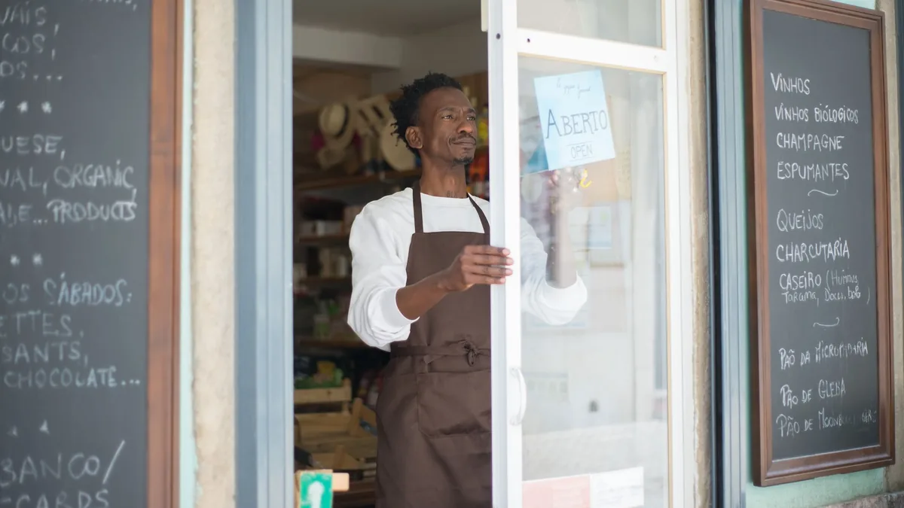
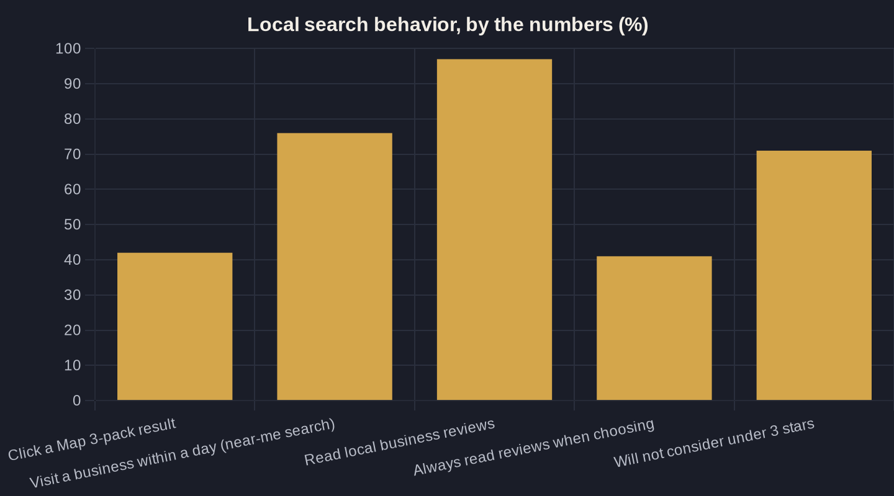

How to Rank Higher on Google Maps (the Local 3-Pack)
The map pack decides how many calls you get this week. Here is the owner-to-owner version of how to rank on Google Maps, and where to spend your limited hours.

Key takeaways
- The Map 3-pack captures roughly 42% of local-search clicks, and near-me searchers visit a business within a day, so top-three placement converts to calls fast.
- Two signals decide most of your rank: your Google Business Profile (~32%) and reviews (~20% and rising). Fix those before anything else.
- Reviews are also a click filter: 71% will not consider a business under three stars, and 97% read reviews before choosing, so volume and recency matter as much as the average.
- Ranking is only the impression-to-lead step. With pricing-request calls surging and about 1 in 4 missed, answering the phone is where the booked job is won or lost.
- Skip the shortcuts: backlink blasts and fake reviews are low or negative leverage and can get your listing suspended.
How to Rank on Google Maps: Start With the 3-Pack
The Google Map 3-pack is the block of three business listings, pinned to a small map, that sits at the top of local search results, above the traditional organic links. It is the most valuable real estate in local search, and for most service businesses it quietly decides how many calls come in this week. Roughly 42% of local searchers click a result inside that map pack, which means nearly four in ten clicks are spoken for before anyone scrolls to the organic results below.
The intent behind those searches is immediate. 76% of people who run a near-me search on a phone visit a related business within a day, so local Maps visibility turns into a booked job or a walk-in fast, not eventually. When owners ask me how to rank on Google Maps, the honest answer is that it is less about clever tricks and more about doing a handful of unglamorous things consistently, in the right order.
This post is the practical version of that work. It sits under the broader playbook in Local SEO for Service Businesses: How to Get Found on Google, and it stays focused on the two levers that actually move 3-pack rank, instead of the long tail of tactics that barely register.
How Google Actually Decides Who Ranks
Google ranks the local pack on three inputs it names openly: relevance (how well your profile matches the search), distance (how close you are to the searcher), and prominence (how well known and trusted your business appears to be). You cannot move your storefront, so distance is mostly fixed. That means the real work of how to rank on Google Maps lives inside relevance and prominence, the two things you can actually influence.
The data backs that up. In BrightLocal's Local Search Ranking Factors study, the two biggest drivers of map-pack position are your Google Business Profile, at about 32% of ranking weight, and reviews, at about 20%. Reviews' share has climbed from 16% in 2023 to 20%, so the trend is moving toward signals an owner can directly affect.
Put plainly: get your profile and your reviews right and you are working on more than half of what Google weighs. Everything else, including website relevance, local links, and citations, matters at the margins, but it is not where a busy owner should start.
Fix Your Google Business Profile First (It Is a Third of the Score)
Because the profile is the single largest factor, it gets fixed first when you are figuring out how to rank on Google Maps. A complete, accurate Google Business Profile gives Google more ways to match you to a relevant search, which is exactly the relevance signal it rewards. Gaps quietly cap how often you surface, even if everything else is solid.
Work it once, top to bottom, and keep it current as your hours, services, and service areas change. The fields that move the needle are unglamorous:
- A primary category that matches your core service, plus every relevant secondary category
- A complete services list with short descriptions, written in the words customers actually use
- Accurate hours, service areas, phone, and website, checked rather than assumed
- Real, recent photos of your team, your work, and your location
The full field-by-field walkthrough lives in Google Business Profile Optimization: The Local Ranking Checklist. That checklist is the difference between a profile that technically exists and one that competes.
Reviews: The Second Lever, and a Hard Filter on Clicks
Reviews are the second lever, and they do double duty. They move rank, and they decide whether a searcher clicks you at all. On rank, they are now worth about a fifth of the local algorithm and rising. On clicks, they are a hard filter: 71% of consumers will not consider a business rated below three stars, and most expect a 4.0-to-5.0 average before they will engage.
Volume and recency matter as much as the average. 97% of consumers read online reviews for local businesses, and 41% now say they always read them, up from 29% the year before. A listing with a steady stream of recent, specific reviews reads as a real, busy, trustworthy business; a stale one reads as a risk, even at four stars.
So the play is a simple, repeatable habit, not a one-time push:
- Ask in person when the job is done, then follow up with a one-tap review link by text or email
- Never make someone hunt for your profile; the easier the ask, the higher the response
- Respond to every review, good and bad, within a few days
- Keep it steady; a few real reviews a month beats a single burst
The mechanics, including the compliance rules you cannot skip, are in How to Get More Google Reviews (Without Breaking the Rules). And because how you answer reviews is itself a prominence signal, How to Respond to Reviews (Especially the Bad Ones) covers the response habit that protects your rating over time.
| Ranking lever | Share of local-pack weight | Effort-to-payoff |
|---|---|---|
| Google Business Profile (categories, hours, services, photos, accuracy) | ~32% — largest single factor | Highest — fix first |
| Reviews (volume, rating, recency, responses) | ~20% — up from 16% in 2023 | High — compounds over time |
| Website relevance and local on-page content | Moderate | Medium |
| Local links and citation consistency | Lower | Medium-low |
| Bought followers, fake or incentivized reviews | 0% — and risks suspension | Negative — never |

Where Ranking Effort Pays Off (and Where It Is Wasted)
Not every task labeled SEO earns its place. The whole question of how to rank on Google Maps comes down to leverage: two signals carry most of the weight, and the rest is a rounding error until those two are handled. The table below orders local-pack effort by payoff so you can spend your limited hours where they count.
If a vendor is selling you backlink packages or citation blasts before your profile and reviews are squared away, they have the order backwards. Fix the 32% and the 20% first. Bought followers, fake reviews, and incentivized reviews are not just low-leverage, they actively risk suspension of the listing you depend on.
Do Not Win the Click and Drop the Call
Ranking is only the first step in the math. In Owner's Math terms, tracing what a dollar of marketing returns from impression to lead to booked job, a top-three Maps ranking buys you the impression and the click. The booked job still depends on what happens when the phone rings, and that is where most of the money is actually lost.
That gap is widening, not closing. Invoca tracked a roughly 4x surge in pricing-request phone calls driven by Google's AI in November 2025, with plumbing calls up over 650%, and businesses still missed about 1 in 4 of those calls and gave no pricing on nearly half of the ones they answered. Winning the 3-pack only to drop the call is the most expensive mistake in local marketing.
So treat ranking and answering as one system, not two projects. If you want the full impression-to-revenue framework, start with Owner's Math. And if you would rather have someone trace your own numbers and show you where the leaks are, that is the kind of work we do on a short call. The monthly note breaks down one local-search fix like this at a time, in plain English, with no fluff.
Sources
Want this run on your numbers?
Book a call and we will run the Owner's Math on your business — clear numbers, a straight plan, no pitch. Or read the free Playbook first.